In this section, the in-house WAXI plugin and its tools will be presented, with the exception of the field databases import tool which will be developed in section 3.
The WAXI plugin is a QGIS plugin, which means an extension that expands the functionality of QGIS and creates tools that meet the needs of the WAXI team. This plugin can be installed from the QGIS Plugins menu as shown in Figure 3.
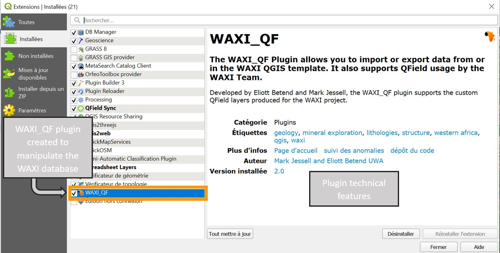
Figure 3: WAXI plugin in the QGIS plugins installation menu
Once installed, the WAXI logo is visible in the QGIS taskbar and clicking on it brings up the plugin's user interface Figure 4 .
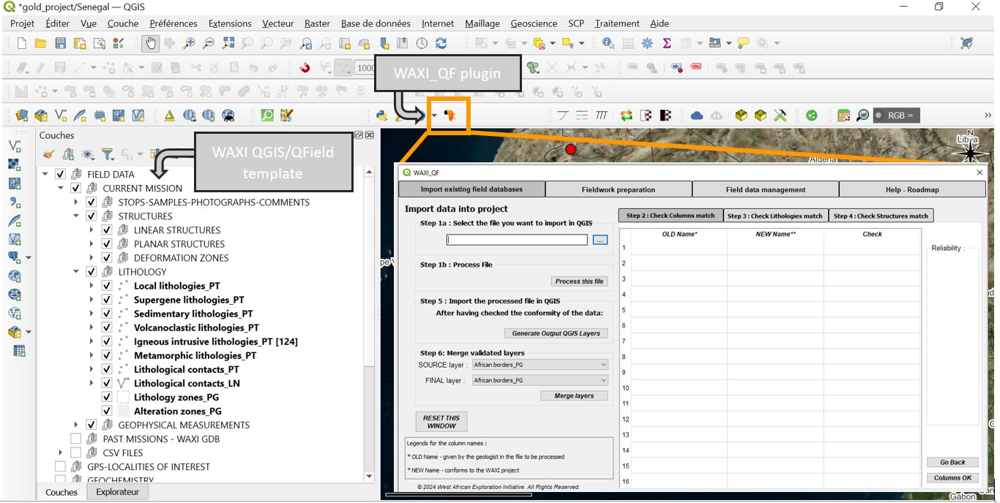
Figure 4: WAXI template and plugin in QGIS
This plugin was created by Mark Jessell and I took it over when I joined the CET. In particular, I developed other tools for the plugin, as well as a completely new interface, which is more user-friendly and easier to understand and manipulate.
The WAXI QGIS/QField template was created by Julien Perret and is an open-source collaborative QGIS project template available online on a Zenodo repository3.
In the interface created by Mark, all tools were located on the same page and they were all connected to the same button, which performed all desired actions at the same time. On the other hand, the interface I created has all the various tools arranged in tabs according to their nature.
A Help-Roadmap page has also been added to the plugin (Figure 5).
3 https://zenodo.org/records/10692516
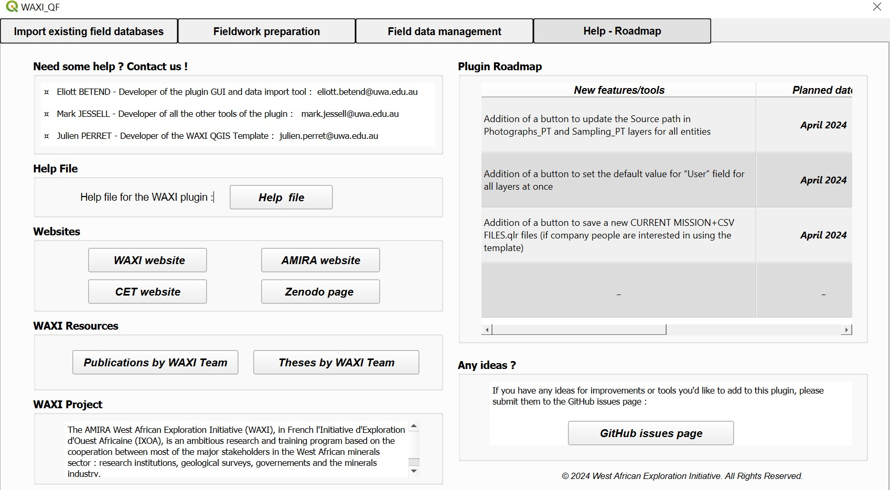
Figure 5: Fourth page of the plugin interface, help page and WAXI information
This page contains the contact details of the creators of the plugin and QGIS template, plus a PDF for assistance if the user needs help with certain functions or tools of the plugin. Future developments of the plugin are also presented. In addition, various links to sites linked to the WAXI have been integrated to facilitate access to them. A brief presentation of the WAXI project is also available in this section.
The second page of the plugin's interface contains useful tools for preparing fieldwork and the collection of geological data (Figure 6). These tools could be divided into two categories : tools for managing the WAXI database and tools for customizing the QGIS WAXI template.
Therefore, geologists exploring the West African Craton will be able to use these tools to easily prepare their database in order to use it on mobile devices (laptop, tablet...) thanks to the QFields application.
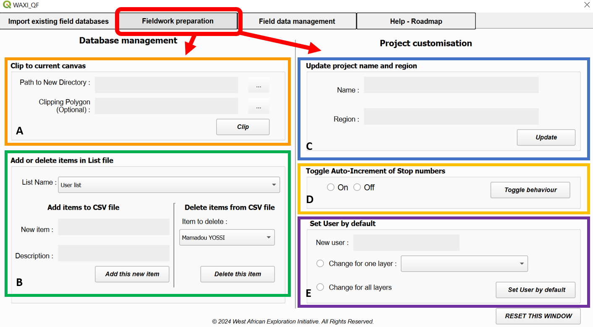
Figure 6: Second page of the plugin interface : fieldwork preparation tools. A) Clip to current canvas tool, B) Add or delete items in list file tool, C) Update project name tool, D) Toggle
auto-increment of stop numbers tool, E) Set user by default tool
Among database management tools, the Clip to current Canvas tool (Figure 6A) allow the user to clip all layers of the WAXI QGIS template to a canvas. Optionally, he can select a polygon shapefile to be the clipping polygon (Figure 7).
Figure 7: Illustration of how the tool works to clip all layers of the WAXI project
The Add or Delete Items tool (Figure 6B) allows the user to add/delete item in a CSV file of his choice and it will update the relevant CSV file which becomes available on mobile devices in the WAXI QField dropdown menu when geologists are in the field. For example, the user can add his name to the User.csv file and thus, when he will be in the field, he could just select it in the dropdown list on his tablet and it saves him time.
This project customization tool (Figure 6C) allows the geologist to update the project name for a new field campaign (Figure 8).
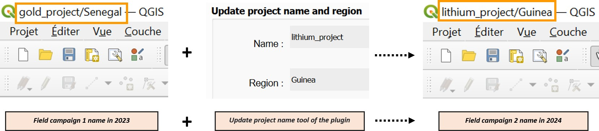
Figure 8: Illustration of how the tool works to update the name of a WAXI project
With the first tool, the user can toggle stop number autoincrementing behavior when a new stop is created (Figure 6D), which saves him lots of time in the field. The set user by default tool (Figure 6E) allows to set the default value for the "User" field for all or some layers of the WAXI project at once (Figure 9) before going to the field for data collection. Therefore, the geologist won't bother editing the user name at first data entry for every single layer of the project and doing post-field editing.
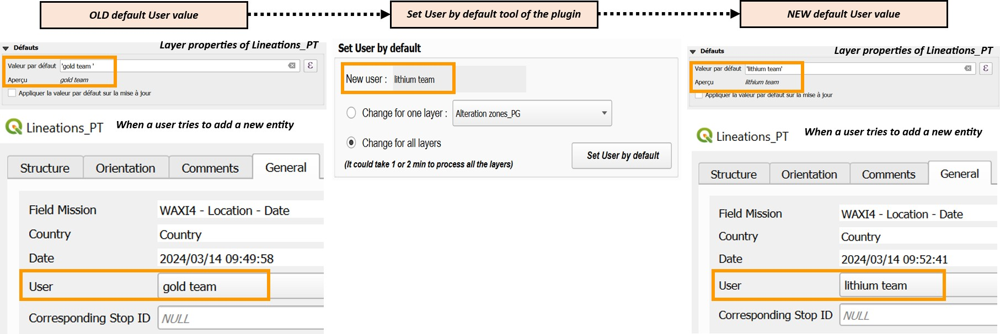
Figure 9: Illustration of how the tool works to set a new user name by default for all layers
The third page of the WAXI plugin's interface contains tools for manipulating different types of data created by geologists during a fieldwork (Figure 10). The tools of this sections are thus post-field editing tools and could be divided into three categories : tools for merging datasets, tools for exporting datasets and tools for stereographic projections. With all these tools, the WAXI team can thereby play with datasets, merge them, export them or visualize them in different ways.
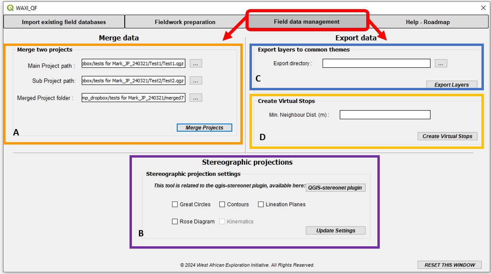
Figure 10: Third page of the plugin interface : A) Merge two projects tool, B) Stereographic projections tool, C) Export layers tool, D) Create virtual stops tool
This tool allows to merge two existing WAXI projects (Figure 10A), for example projects created by two different geologists. Duplicate rows in each layer will be deleted.
The export layers to common themes tool export all points, polygons and lines which are combined to the zones, structures and lithology sections of the WAXI template (Figure 10C). Hence, the user can share this vector data with other users very easily.
With this tool, the geologist can define clustering distance to add a cluster code to all different types of points observations according to locality, using a DBSCAN algorithm (Fig- ure 10D). If the dataset is quite large, this tool can be very slow. Thus it's better to clipped data for a region of interest before using this tool.
This tool is related to the qgis-stereonet plugin and the WAXI plugin only controls the display behavior (Figure 10B). The planar structures can be displayed as poles or great circles whereas linear structures can be displayed as poles or rose diagrams.
Qt Designer was used to design the plugin's graphical user interface (GUI). It's a software specially developed for customizing the graphical interfaces of QGIS plugins (Figure 11). I was able to organize the plugin by placing the tools in different tabs and containers. This made the plugin easier to understand and more user-friendly for geologists, including neophytes in GIS.
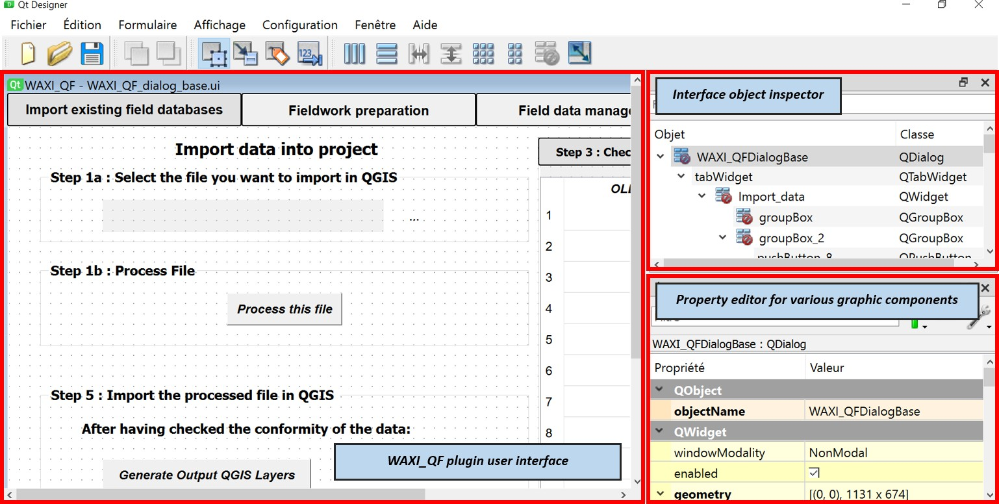
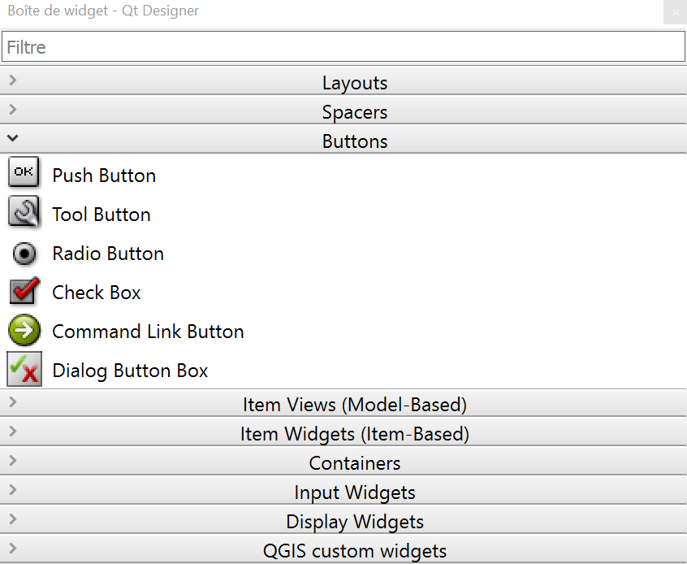Figure 11: Qt Designer software interface for designing the graphical interface of the WAXI plugin
Moreover, with this software, I was able to insert buttons that I then connected to Python functions to perform the desired actions. These buttons can take as input various parameters set by the user.
Other widgets were also used to meet the expectations and needs of the WAXI team (Figure 12).
Figure 12: Widgets available in
Qt Designer
Thus, with Qt Designer, the plugin's entire interface is built. This is an important step in the construction of the plugin, as it's the link between the plugin's Python source code and the QGIS template. Hence, the more intelligently the interface is built, the easier it will be for the user to use the plugin.
The CSS, or Cascading Style Sheets, language has also been used in Qt Designer to enhance the appearance of widgets of the plugin (Figure 13). It is a presentation and formatting language, used for example to control the color, shape and size of the plugin's various components.
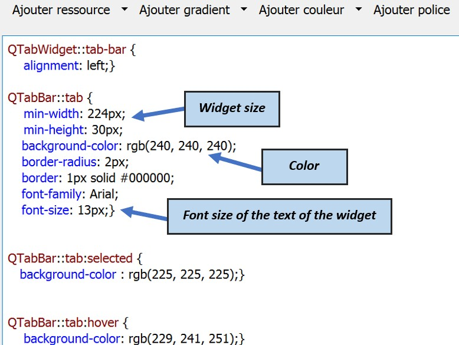
Figure 13: CSS language used to control the appearance of widgets of the plugin
In this third section, the databases import tool, one of the most powerful tool of the plugin, will be presented. Over 1,800 lines of Python code are required to run this tool.
The idea for this tool arose when existing field databases wanted to be integrated into the WAXI database. Many problems were encountered because these databases, in the form of QGIS vector layers, didn't meet the WAXI project's 'standards'. For example, there are as many names for lithologies as there are geologists, and all lithological and structural data are mixed up in these databases. As a result, a standardization work needs to be done before these databases can be integrated into QGIS. Tools for comparison, identification, cleaning and sorting will be implemented in this long python program to harmonize conventions and nomenclatures between different geologists.
In the Figure 14, on the tool user interface, the various program steps can be seen. They will be briefly described in the following section.
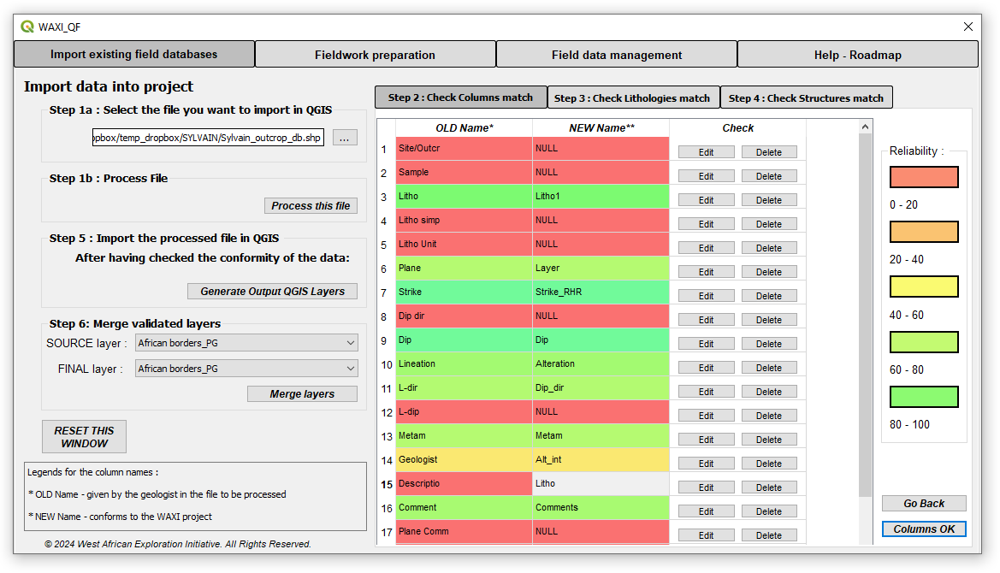
Figure 14: Graphical user interface for the field databases import tool
This powerful tool has six steps shown in the Figure 15, allowing geologists to import an existing field database and integrate it into the WAXI project in a standardized way.
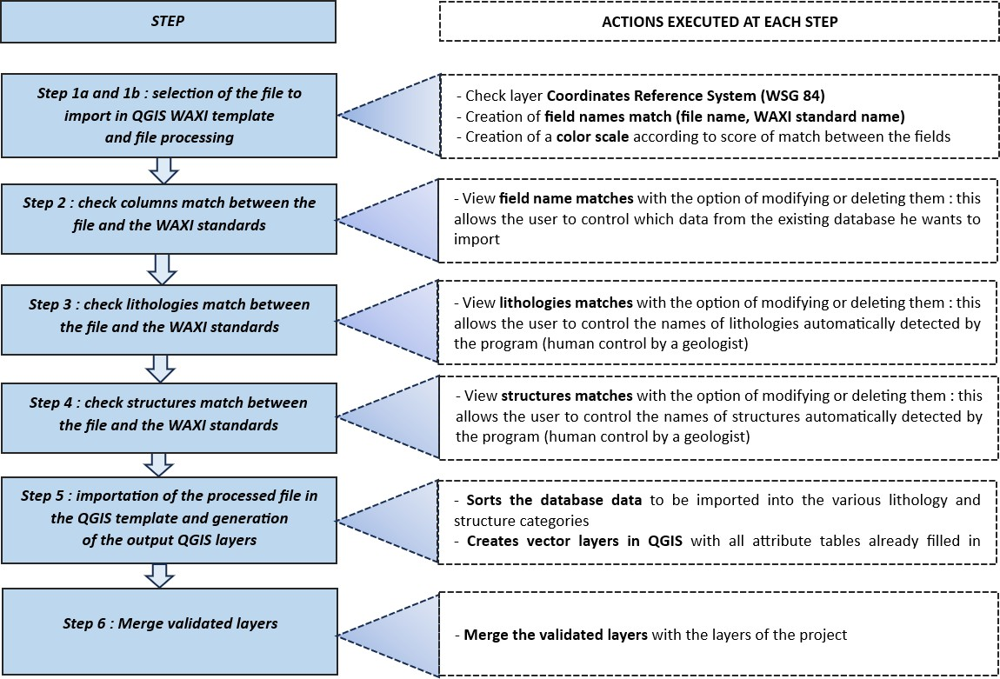
Figure 15: The six steps of the tool detailed
In this example, the database KNH_1998_LL will be integrated into the QGIS template using the plugin's database import tool.
The KNH_1998_LL field database presents several problems, described in Figure 16, which prevent its direct integration into the WAXI project.
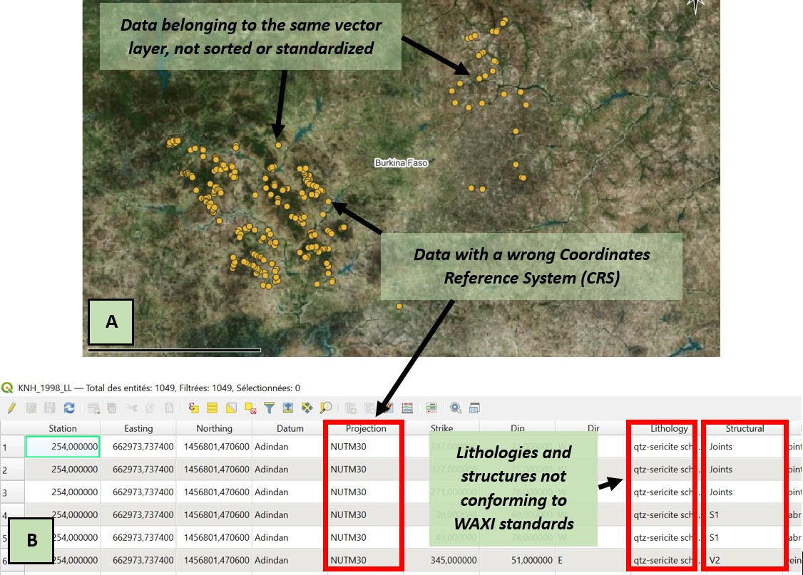
Figure 16: KNH_1998_LL field database problems : A) View of database points in QGIS window B) View of the layer attribute table in QGIS
Therefore, the databases import tool is used to integrate this layer in the WAXI template.
This existing database is selected in step 1a (Figure 17) and processed in step 1b.
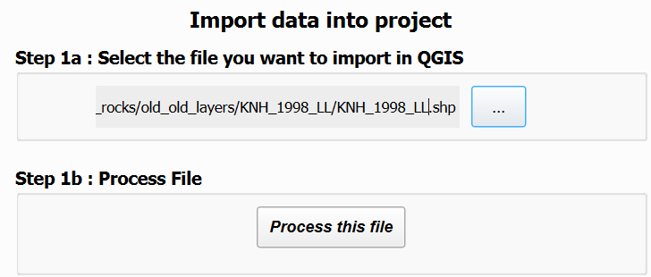
Figure 17: Selection of the KNH_1998_LL field database
In step 2, an interactive table is created, allowing the user to check the column associations automatically proposed by the program (Figure 18).
A color scale makes it easier for the user to identify fields in the file that have poorly matched the fields present in the WAXI template layers, and which should either be modified or deleted.
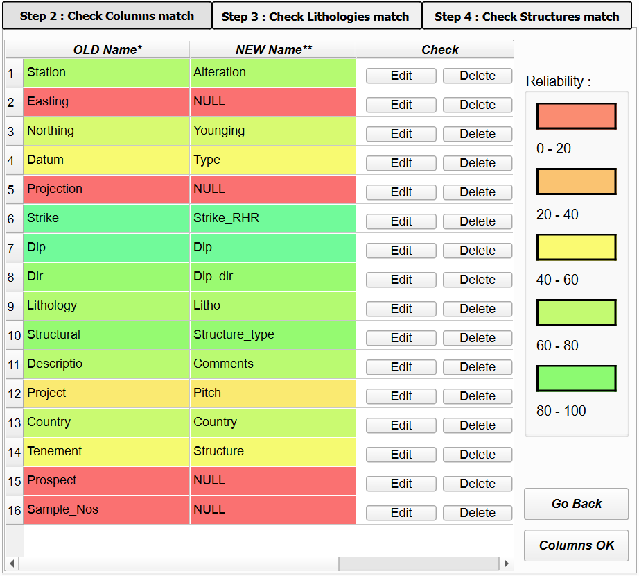Figure 18: Check of field names match
In step 3, an interactive table is also created, allowing the user to check the lithologies associations automatically proposed by the program (Figure 19A) and in step 4 an interactive table is once again created, allowing the user to check the structures associations (Figure 19B). A color scale based on a similarity confidence score is also present to guide the user's choices and suggest possible modifications.
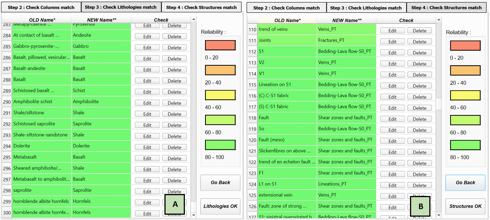
Figure 19: A) Check lithologies match step, B) Check structures match step
Finally, once the user has verified everything, the existing field database can be integrated into the WAXI template in the form of several vector layers (Figure 20), each containing information from the same category (lithological data, structural data. . . ).
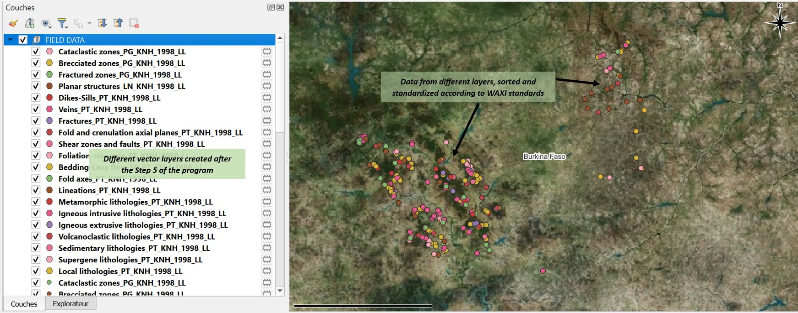
Figure 20: Output of the field databases import tool of the WAXI_QF plugin
Therefore, with this tool, any existing field database can be seamlessly integrated into the WAXI project with minimal processing time.
Briefly on the creation of this field databases import tool, it is coded in Python, like all the tools of the WAXI_QF plugin, and calls several Python libraries. Among these libraries, the PyQt library is paramount because it connects the Python code to the various components of the plugin's graphical user interface. Another fundamental library is the fuzzywuzzy library which allows comparisons and similarity scores between two terms.
The QGIS template created by Julien Perret and this WAXI_QF plugin will work in a complementary and synergetic way with the purpose to help geologists during their field exploration campaigns at all levels : fieldwork preparation, field data collection and post-field geological interpretations.
As detailed in the previous sections, this plugin provides a number of tools for preparing the QGIS WAXI template before going out into the field for mineral exploration, so that the user can customize the template to his needs or the needs of his company. The modification of drop-down lists enables total customization of possible field entries for all layers of the project. Thereby, the data entered by field geologists is uniform, verified and adapted to the exploration region or geological context. This QGIS template will be available in the field thanks to the QField application, available on mobile devices (phones, tablets, PCs...) and thus having prepared the project before the field work saves lots of time for the user.
In addition, this plugin enables the user to manipulate geological databases created during fieldwork. Field data can be merged, exported or visualized in new ways using the plugin's various tools with minimal post-field processing. Moreover, existing databases can be imported to the project, while guaranteeing uniformity and consistency between all geological and spatial data. All the post-field processing tools of the plugin allows better data management but also geological interpretations.
In a nutshell, this WAXI_QF plugin has been developed as part of the WAXI project to further facilitate the work of field geologists in mineral exploration. Before heading out into the field, they can customize their database according to their geological environment, but also to the team they will be working with or the standards of their company. Once in the field in the West African Craton, they will be able to collect data digitally using the QField application, available on laptop, tablet and PC. Unlike in the past, these field databases can now be shared quickly and reliably between the various members of the exploration team. They will be uni- form, accurate and complete. Once the fieldwork is finished, the QGIS plugin will enable them to manipulate, process and interpret the data collected more quickly, without wasting too much time. This plugin was developed for the WAXI, but its applications can be extended to other regions of the world.
During human history, a great amount of data was produced. For example, between 2010 and 2020, the volume of digital data created or replicated worldwide was multiplied by 30, according to Statista4, and this amount will increase exponentially in the years to come as new technologies become ever faster and more efficient. Therefore, it is essential to control this production (or collection, in the case of mineral exploration) of data if this data is to be reliably stored over time for future use.
This is why the development of tools, such as the WAXI_QF plugin, is even more important nowadays, because, if such tools don't exist, a lot of energy and resources (human, material, economic...) will be invested in mineral exploration, and this will only generate a lot of unreliable, non-uniform data, sometimes leading to false interpretations, and, in the worst case, leading to wrong decisions with economic and even human impacts...
AMIRA (2024), 'AMIRA. P934C West African eXploration Initiative (WAXI) - Stage 4'. Accessed: February 2024.
URL: https://amira.global/projects/west-african-exploration-initiative-waxi-stage-4/
Goldfarb, R. J., André-Mayer, A.-S., Jowitt, S. M. & Mudd, G. M. (2017), 'West africa: The world's premier paleoproterozoic gold province', Economic Geology 112(1), 123-143.
Jessell, M., Baratoux, D., Siebenaller, L., Hein, K., Maduekwe, A., Ouedraogo, F. M., Baratoux, L., Diagne, M., Cucuzza, J., Seymon, A. et al. (2018), 'New models for geoscience higher education in west africa', Journal of African Earth Sciences 148, 99-108.
Markwitz, V., Hein, K. A., Jessell, M. W. & Miller, J. (2016), 'Metallogenic portfolio of the west africa craton', Ore geology reviews 78, 558-563.
4 https://fr.statista.com/infographie/17800/big-data-evolution-volume-donnees-numeriques-genere-dans-le-
monde/
La vérification point par point de la conformité de votre rapport finalisé avec chacun des éléments de cette checklist vous permet de vous assurer que votre rapport répond, au moins dans sa forme, aux consignes de rédaction des rapports réalisés dans le cadre de votre scolarité à l'ENSG.
Cette vérification doit être effectuée point par point juste avant l'impression et/ou l'enregistrement au format pdf. Elle doit être intégrée dans les annexes de votre rapport. Chaque case ne doit être cochée que si votre rapport est bel et bien conforme avec la recommandation associée à la case. Toutes les cases doivent être obligatoirement cochées lorsque vous rendez votre rapport.
Forme générale et structuration du rapport
titre en bas de page, pas de figure en tout début de partie ou sous-partie, etc.).
littéraire ou télégraphique préférez les phrases courtes, concises et précises aux phrases longues et peu informatives etc.).
L'iconographie du rapport
Le fond du rapport
de sources externes ou de rapports des années précédentes et à les intégrer à son propre travail sans en mentionner la provenance).